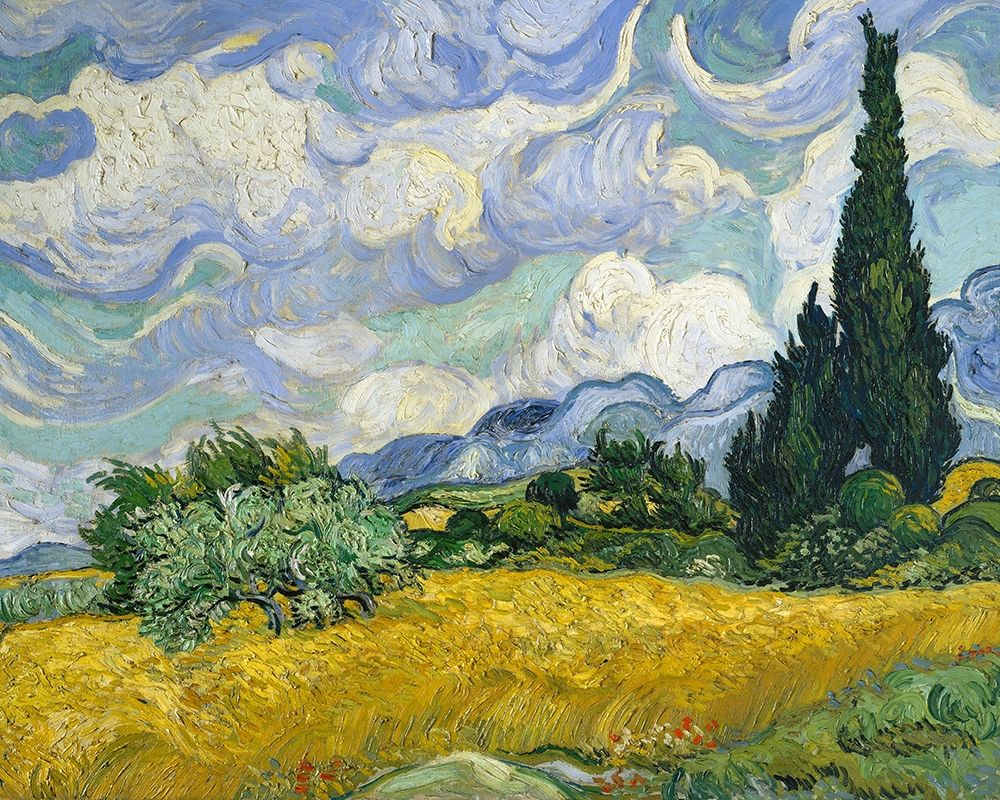
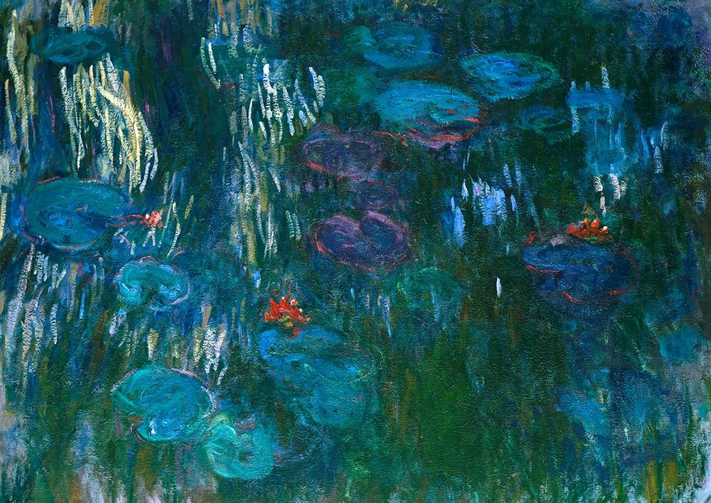

The Starry Night

Explore a curated collection of digital and classic artworks from around the world.
Vincent van Gogh's The Starry Night is a masterpiece gem of Post-Impressionism, painted in June 1889 while he was a patient at an asylum in Saint-Rémy-de-Provence, France. The painting features a wildly expressive and turbulent night sky over a serene, stylized village, creating a dynamic contrast between heaven and earth. It has become one of the most famous and recognizable paintings in the history of Western art.

Wheat Field with Cypresses is the title of a series of three similar oil paintings created by Vincent van Gogh in 1889. He produced the works while a patient at the Saint-Paul-de-Mausole mental asylum in Saint-Rémy, France, drawing inspiration from the view from his window.

Claude Monet's Water Lilies (French: Nymphéas) is a monumental series of about 250 oil paintings depicting the artist's flower garden in Giverny, France. The paintings, which occupied the last two three decades of his life, were both an intimate and obsessive project for Monet.
| S.No | Title | Artist | Year |
|---|---|---|---|
| 1. | The Starry Night | Vincent van Gogh | 1889 |
| 2. | Wheat Field with Cypresses | Vincent van Gogh | 1889 |
| 3. | Water Lilies | Claude Monet | 1840 |